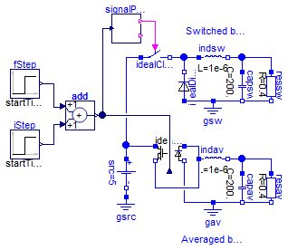
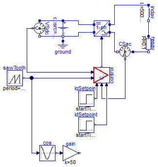
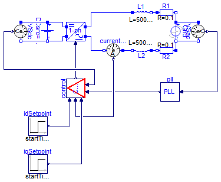
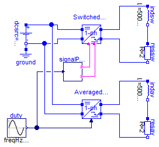
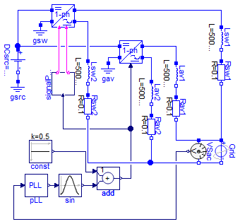
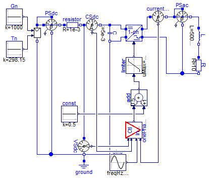
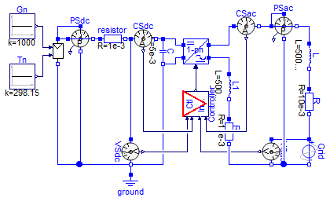

More complete application examples
Information
Extends from Modelica.Icons.ExamplesPackage (Icon for packages containing runnable examples).
Package Content
| Name |
Description |
 BuckOpen BuckOpen
|
Ideal synchronous open-loop buck converter |
| Inverter1phClosed
|
Basic 1-phase closed-loop inverter with constant DC voltage source and no synchronization |
 Inverter1phClosedSynch Inverter1phClosedSynch
|
Grid synchronized 1-phase closed-loop inverter fed by constant DC source |
 Inverter1phOpen Inverter1phOpen
|
Basic 1-phase open-loop inverter with constant DC voltage source and no synchronization |
| Inverter1phOpenSynch
|
Grid synchronized 1-phase open-loop inverter fed by constant DC source |
 PVInverter1ph PVInverter1ph
|
Simple PV system including PV array, inverter and no grid |
| PVInverter1phSynch
|
Simple PV system including PV array, inverter and grid |
Ideal synchronous open-loop buck converter

Information
This compares two implementations of a buck DC-DC converter. The
switched version is built using mostly blocks
from Modelica's
electrical library but also includes
the SignalPWM
model. The averaged version is built around the average switch model
for CCM (continuous conduction mode).
This example showcases how components from PVSystems can be mixed with
components from the Modelica Standard Library to build systems that
might be of interest. Additionally, it aims validating the average
switch model performance by comparison with the more
accurate/detailed switched model.
This is still an open-loop system. A duty cycle value is fed to the
SignalPWM block to drive the ideal closing switch or to the
IdealAverageCCMSwitch model. The duty cycle value begins at 0.2 and
changes to 0.6 and finally to 0.7. The effect of this change can be
observed by plotting the output voltage:
This figure also displays the input voltage for the sake of
comparison. It make the point that the function of the buck
converter is to reduce the voltage level from the input to the
output.
Additionally, one can see that the output voltage for both
implementations is not exactly the same. The main difference can be
found at the begining of the simulation, when the duty cycle is
0.2. By close inspection of the inductor current one can see that
the converters are not operating in CCM but rather are working in
DCM (Discontinuous Conduction Mode). This condition is defined by
the fact that the inductor current remains at 0 for a certain part
of the switching period, as shown in the following figure:
Since the average model used is valid only in CCM, this innaccuaricy
is to be expected.
An interesting exercise to complete this example would be to build a
controller to close the loop and study the system's behaviour.
Extends from Modelica.Icons.Example (Icon for runnable examples).
Modelica definition
model BuckOpen
extends Modelica.Icons.Example;
Modelica.Electrical.Analog.Sources.ConstantVoltage src(V=5);
Modelica.Electrical.Analog.Basic.Resistor resav(R=0.4);
Modelica.Electrical.Analog.Basic.Inductor indav(L=1e-6);
Modelica.Electrical.Analog.Basic.Capacitor capav(C=200e-6);
PVSystems.Electrical.IdealAverageCCMSwitch idealAverageCCMSwitch;
Modelica.Electrical.Analog.Ideal.IdealClosingSwitch idealClosingSwitch;
Modelica.Electrical.Analog.Ideal.IdealDiode idealDiode;
Control.SignalPWM signalPWM(period=1e-5);
Modelica.Electrical.Analog.Basic.Resistor ressw(R=0.4);
Modelica.Electrical.Analog.Basic.Inductor indsw(L=1e-6);
Modelica.Electrical.Analog.Basic.Capacitor capsw(C=200e-6);
Modelica.Blocks.Sources.Step iStep(
height=0.4,
startTime=0.01,
offset=0.2);
Modelica.Blocks.Sources.Step fStep(
height=0.1,
offset=0,
startTime=0.015);
Modelica.Blocks.Math.Add add;
Modelica.Electrical.Analog.Basic.Ground gsrc;
Modelica.Electrical.Analog.Basic.Ground gsw;
Modelica.Electrical.Analog.Basic.Ground gav;
equation
connect(capav.n, gav.p);
connect(resav.n, gav.p);
connect(indav.n, resav.p);
connect(capav.p, indav.n);
connect(src.p, idealAverageCCMSwitch.p1);
connect(idealAverageCCMSwitch.p2, indav.p);
connect(idealAverageCCMSwitch.n2, gav.p);
connect(idealAverageCCMSwitch.n1, indav.p);
connect(signalPWM.fire, idealClosingSwitch.control);
connect(idealClosingSwitch.p, src.p);
connect(idealClosingSwitch.n, idealDiode.n);
connect(indsw.n, ressw.p);
connect(capsw.p, indsw.n);
connect(indsw.p, idealDiode.n);
connect(fStep.y, add.u1);
connect(iStep.y, add.u2);
connect(add.y, idealAverageCCMSwitch.d);
connect(signalPWM.duty, add.y);
connect(capsw.n, ressw.n);
connect(idealDiode.p, gsw.p);
connect(gsw.p, capsw.n);
connect(gsrc.p, src.n);
end BuckOpen;
Basic 1-phase closed-loop inverter with constant DC voltage source and no synchronization

Information
This example explores a closed-loop inverter. No grid is present,
which simplifies things. But, since the controller is implemented in
the synchronous (dq) refrecen frame, a synchronization source needs
to exist. This is implemented with the saw tooth generator, which
emulates the output of the PLL.
As can be seen in the following figure, one can now comfortably
specify the setpoint for the output current of the inverter:
Having the posibility to separately control the current in each dq
axis enables one to control the power factor (i.e. the phase lag
between the voltage and the current) as well as the amplitude of the
current.
In this example, the equivalent synchronization signal is plotted to
see this phase shift as the setpoints change. Notice how, when the q
component of the current is 0, the d component is equal to the peak
current.
Extends from Modelica.Icons.Example (Icon for runnable examples).
Modelica definition
model Inverter1phClosed
extends Modelica.Icons.Example;
Modelica.Electrical.Analog.Sources.ConstantVoltage dcsrc(V=500);
Modelica.Electrical.Analog.Basic.Ground ground;
PVSystems.Electrical.HBridgeAveraged HBav;
Modelica.Electrical.Analog.Basic.Resistor resav(R=0.1);
Modelica.Electrical.Analog.Basic.Inductor indav(L=500e-6);
Modelica.Blocks.Sources.Step iqSetpoint(height=14.14, startTime=0.2);
Modelica.Blocks.Sources.Step idSetpoint(
offset=20,
startTime=0.2,
height=14.14 - 20);
Modelica.Electrical.Analog.Sensors.CurrentSensor CSac;
Modelica.Blocks.Sources.SawTooth sawTooth(amplitude=2*Modelica.Constants.pi,
period=0.02);
Modelica.Blocks.Math.Cos cos;
Modelica.Blocks.Math.Gain gain(k=50);
Control.ControllerInverter1phCurrent control;
Modelica.Electrical.Analog.Sensors.VoltageSensor VSdc;
equation
connect(dcsrc.n, ground.p);
connect(resav.p, indav.n);
connect(HBav.dcp, dcsrc.p);
connect(HBav.dcn, dcsrc.n);
connect(CSac.p, resav.n);
connect(HBav.acn, CSac.n);
connect(HBav.acp, indav.p);
connect(cos.u, sawTooth.y);
connect(cos.y, gain.u);
connect(control.d, HBav.d);
connect(CSac.i, control.i);
connect(iqSetpoint.y, control.iqSetpoint);
connect(idSetpoint.y, control.idSetpoint);
connect(control.theta, sawTooth.y);
connect(VSdc.p, dcsrc.p);
connect(VSdc.n, dcsrc.n);
connect(VSdc.v, control.udc);
end Inverter1phClosed;
Grid synchronized 1-phase closed-loop inverter fed by constant DC source

Information
Extends from Modelica.Icons.Example (Icon for runnable examples), Modelica.Icons.UnderConstruction (Icon for classes that are still under construction).
Modelica definition
model Inverter1phClosedSynch
extends Modelica.Icons.Example;
extends Modelica.Icons.UnderConstruction;
Modelica.Electrical.Analog.Sources.ConstantVoltage DCsrc(V=580);
Modelica.Electrical.Analog.Sources.SineVoltage Grid(freqHz=50, V=480);
Control.PLL pll;
Modelica.Electrical.Analog.Sensors.VoltageSensor VSac;
PVSystems.Electrical.HBridgeAveraged HB(d(start=0.5));
Modelica.Electrical.Analog.Basic.Inductor L1(L=500e-6);
Modelica.Electrical.Analog.Basic.Resistor R1(R=0.1);
Modelica.Electrical.Analog.Basic.Inductor L2(L=500e-6);
Modelica.Electrical.Analog.Basic.Resistor R2(R=0.1);
Modelica.Electrical.Analog.Sensors.CurrentSensor currentSensor;
Control.ControllerInverter1phCurrent control(d(start=0.5));
Modelica.Electrical.Analog.Sensors.VoltageSensor VSdc(v(start=DCsrc.V));
Modelica.Blocks.Sources.Step iqSetpoint(height=14.14, startTime=0.2);
Modelica.Blocks.Sources.Step idSetpoint(
offset=20,
startTime=0.2,
height=14.14 - 20);
equation
connect(Grid.p, VSac.p);
connect(Grid.n, VSac.n);
connect(L1.n, R1.p);
connect(R2.n, L2.p);
connect(HB.acp, L1.p);
connect(R1.n, Grid.p);
connect(Grid.n, R2.p);
connect(DCsrc.p, HB.dcp);
connect(DCsrc.n, HB.dcn);
connect(currentSensor.p, L2.n);
connect(HB.acn, currentSensor.n);
connect(pll.v, VSac.v);
connect(VSdc.p, DCsrc.p);
connect(VSdc.n, DCsrc.n);
connect(control.d, HB.d);
connect(VSdc.v, control.udc);
connect(pll.theta, control.theta);
connect(currentSensor.i, control.i);
connect(iqSetpoint.y, control.iqSetpoint);
connect(idSetpoint.y, control.idSetpoint);
end Inverter1phClosedSynch;
Basic 1-phase open-loop inverter with constant DC voltage source and no synchronization

Information
IdealInverter1phOpen presents two implementations of an open loop
1-phase inverter. The function of the inverter is to convert DC
voltage and current into AC voltage and current. To keep things
simple, a constant DC source is included on the DC side and an LC
load is included on the AC side. Typically, inverters are placed
inside a more complicated setup, which might require MPPT (Maximum
Power Point Tracking) on the DC side when connected to a PV array
and AC synchronization when connected to a grid on the AC side
instead of just a simple passive load.
Nevertheless, the example still showcases an interesting
application. Upon running the simulation with the provided values,
plotting the resistor voltage and current and the DC source voltage
yields the following figure:
The AC is achieved with the inverter topology (called an H-bridge)
as well as with the duty cycle sinusoidal modulation. Have a look at
the duty cycle driving the SignalPWM block and compare it with the
voltage drop in the resistor.
Compare it with the voltage drop in the inductor. The voltage coming
out of the inverter is actually a square wave and the inductor is
providing some crude (but enough for some applications)
filtering. Play around with the value of the inductor to see how it
provides a better or worse filtering performance (decreasing or
increasing the voltage and current ripple in the resistor, which in
this example is assumed to be the load being fed). Since this is an
open loop configuration, it will also change the peak value of the
voltage drop in the resistor, as well as its phase.
Importantly, see how the the average model provides a very good
approximation for low frequencies. This kind of model won't be
useful to study ripples and to evaluate the performance of different
PWM modulations (sinusoidal modulation is being used in this
example) or of different filter configurations, since those are
concerned with the high frequencies in the system. On the other
hand, the average models will be very useful to study controllers
and to perform longer simulations since the simulation step doesn't
need to be so small as to accurately represent the switching
dynamics.
Extends from Modelica.Icons.Example (Icon for runnable examples).
Modelica definition
model Inverter1phOpen
extends Modelica.Icons.Example;
PVSystems.Electrical.HBridgeSwitched HBsw;
Modelica.Electrical.Analog.Sources.ConstantVoltage dcsrc(V=500);
Modelica.Electrical.Analog.Basic.Ground ground;
Modelica.Electrical.Analog.Basic.Resistor ressw(R=2);
Modelica.Electrical.Analog.Basic.Inductor indsw(L=500e-6);
Modelica.Blocks.Sources.Sine duty(
amplitude=0.4,
offset=0.5,
freqHz=50);
Control.SignalPWM signalPWM(period=320e-6);
PVSystems.Electrical.HBridgeAveraged HBav;
Modelica.Electrical.Analog.Basic.Resistor resav(R=2);
Modelica.Electrical.Analog.Basic.Inductor indav(L=500e-6);
equation
connect(duty.y, signalPWM.duty);
connect(dcsrc.n, ground.p);
connect(HBsw.dcn, dcsrc.n);
connect(HBsw.dcp, dcsrc.p);
connect(HBsw.acp, indsw.p);
connect(HBsw.acn, ressw.n);
connect(ressw.p, indsw.n);
connect(signalPWM.fire, HBsw.fireA);
connect(signalPWM.notFire, HBsw.fireB);
connect(resav.p, indav.n);
connect(HBav.acp, indav.p);
connect(resav.n, HBav.acn);
connect(HBav.d, duty.y);
connect(HBav.dcp, dcsrc.p);
connect(HBav.dcn, dcsrc.n);
end Inverter1phOpen;
Grid synchronized 1-phase open-loop inverter fed by constant DC source

Information
This example goes a step further
than Inverter1phOpen
and includes grid synchronization. Typically this is the condition
for inverters in real-life situations. Both switched and averaged
implementations are presented for comparison purposes and it can be
seen that they both provide very similar results (excluding the fact
that high frequencies are left out in the averaged model).
Since this is still open-loop and there's no in-quadrature
separation, the value of the current can't comfortably be specified
to be of a certain value. Since the RL load has almost equal real
and imaginary parts, the current that is drawn from the inverter has
a power factor different than one.
A key value to pay attention to in this example is the gain that is
placed in the Add block.
It's initially set at 0.5. The value is expressed as 580/580/2 to
highlight the fact that this gain should be normalized to the DC
voltage value. Above that, over-modulation will occur and the output
current of the inverter will become quite ugly. Play around with
this value (using values between 0 and 0.5) to see how the output
current of the inverter changes.
Extends from Modelica.Icons.Example (Icon for runnable examples).
Modelica definition
model Inverter1phOpenSynch
extends Modelica.Icons.Example;
PVSystems.Electrical.HBridgeSwitched HBsw;
Modelica.Electrical.Analog.Sources.ConstantVoltage DCsrc(V=580);
Modelica.Electrical.Analog.Sources.SineVoltage Grid(freqHz=50, V=480);
Modelica.Electrical.Analog.Basic.Inductor Lsw1(L=500e-6);
Control.PLL pLL;
Modelica.Electrical.Analog.Sensors.VoltageSensor VSac;
Control.SignalPWM signalPWM(period=320e-6);
Modelica.Blocks.Math.Cos sin;
Modelica.Blocks.Math.Add add(k2=1, k1=580/580/2);
Modelica.Blocks.Sources.Constant const(k=0.5);
Modelica.Electrical.Analog.Basic.Ground gsrc;
Modelica.Electrical.Analog.Basic.Resistor Rsw1(R=0.1);
PVSystems.Electrical.HBridgeAveraged HBav;
Modelica.Electrical.Analog.Basic.Inductor Lav1(L=500e-6);
Modelica.Electrical.Analog.Basic.Resistor Rav1(R=0.1);
Modelica.Electrical.Analog.Basic.Ground gsw;
Modelica.Electrical.Analog.Basic.Ground gav;
Modelica.Electrical.Analog.Basic.Inductor Lsw2(L=500e-6);
Modelica.Electrical.Analog.Basic.Resistor Rsw2(R=0.1);
Modelica.Electrical.Analog.Basic.Inductor Lav2(L=500e-6);
Modelica.Electrical.Analog.Basic.Resistor Rav2(R=0.1);
equation
connect(HBsw.acp, Lsw1.p);
connect(Lsw1.n, Rsw1.p);
connect(Rsw1.n, Grid.p);
connect(Grid.p, VSac.p);
connect(Grid.n, VSac.n);
connect(Lav1.n, Rav1.p);
connect(HBav.acp, Lav1.p);
connect(DCsrc.p, HBsw.dcp);
connect(HBav.dcp, DCsrc.p);
connect(gsrc.p, DCsrc.n);
connect(gsw.p, HBsw.dcn);
connect(pLL.theta, sin.u);
connect(const.y, add.u2);
connect(HBav.dcn, gav.p);
connect(sin.y, add.u1);
connect(signalPWM.duty, add.y);
connect(HBav.d, add.y);
connect(Rav1.n, VSac.p);
connect(VSac.v, pLL.v);
connect(signalPWM.fire, HBsw.fireA);
connect(signalPWM.notFire, HBsw.fireB);
connect(Lsw2.n, Rsw2.p);
connect(HBsw.acn, Lsw2.p);
connect(Rsw2.n, VSac.n);
connect(Lav2.n, Rav2.p);
connect(HBav.acn, Lav2.p);
connect(Rav2.n, VSac.n);
end Inverter1phOpenSynch;
Simple PV system including PV array, inverter and no grid

Information
Extends from Modelica.Icons.Example (Icon for runnable examples), Modelica.Icons.UnderConstruction (Icon for classes that are still under construction).
Modelica definition
model PVInverter1ph
extends Modelica.Icons.Example;
extends Modelica.Icons.UnderConstruction;
Electrical.PVArray PV(v(start=450));
Modelica.Blocks.Sources.Constant Gn(k=1000);
Modelica.Blocks.Sources.Constant Tn(k=298.15);
PVSystems.Electrical.HBridgeAveraged Inverter;
Modelica.Electrical.Analog.Basic.Inductor L(L=500e-6);
Modelica.Electrical.Analog.Basic.Resistor R(R=10);
Modelica.Electrical.Analog.Basic.Capacitor C(C=5e-3, v(start=32.8));
Modelica.Electrical.Analog.Sensors.VoltageSensor VSdc;
Modelica.Electrical.Analog.Sensors.CurrentSensor CSdc;
Modelica.Electrical.Analog.Sensors.PowerSensor PSac;
Modelica.Electrical.Analog.Sensors.PowerSensor PSdc;
Modelica.Electrical.Analog.Basic.Resistor resistor(R=1e-3, v(start=30));
Modelica.Electrical.Analog.Basic.Ground ground;
Modelica.Electrical.Analog.Sensors.CurrentSensor currentSensor;
Modelica.Blocks.Sources.Sine sine(freqHz=50);
Modelica.Blocks.Nonlinear.Limiter limiter(uMin=0);
Modelica.Blocks.Math.Add add(k1=0.5);
Modelica.Blocks.Sources.Constant const(k=0.5);
PVSystems.Control.ControllerInverter1ph onePhaseInverterController;
equation
connect(Gn.y, PV.G);
connect(Tn.y, PV.T);
connect(C.p, Inverter.dcp);
connect(PV.n, VSdc.n);
connect(VSdc.n, C.n);
connect(CSdc.n, C.p);
connect(VSdc.p, CSdc.p);
connect(L.n, R.p);
connect(PSdc.pv, PV.p);
connect(PSdc.nv, VSdc.n);
connect(PSac.nc, L.p);
connect(PSac.pv, PSac.pc);
connect(resistor.n, CSdc.p);
connect(PV.p, PSdc.pc);
connect(PSdc.nc, resistor.p);
connect(C.n, Inverter.dcn);
connect(ground.p, VSdc.n);
connect(Inverter.acn, R.n);
connect(PSac.nv, R.n);
connect(currentSensor.n, PSac.pc);
connect(Inverter.acp, currentSensor.p);
connect(limiter.y, Inverter.d);
connect(const.y, add.u2);
connect(add.y, limiter.u);
connect(onePhaseInverterController.d, add.u1);
connect(sine.y, onePhaseInverterController.vac);
connect(currentSensor.i, onePhaseInverterController.iac);
connect(VSdc.v, onePhaseInverterController.vdc);
connect(CSdc.i, onePhaseInverterController.idc);
end PVInverter1ph;
Simple PV system including PV array, inverter and grid

Information
Extends from Modelica.Icons.Example (Icon for runnable examples), Modelica.Icons.UnderConstruction (Icon for classes that are still under construction).
Modelica definition
model PVInverter1phSynch
extends Modelica.Icons.Example;
extends Modelica.Icons.UnderConstruction;
Electrical.PVArray PV(v(start=450));
Modelica.Blocks.Sources.Constant Gn(k=1000);
Modelica.Blocks.Sources.Constant Tn(k=298.15);
PVSystems.Electrical.HBridgeAveraged Inverter;
Modelica.Electrical.Analog.Sources.SineVoltage Grid(freqHz=50, V=25);
Modelica.Electrical.Analog.Basic.Inductor L(L=500e-6);
Modelica.Electrical.Analog.Basic.Resistor R(R=10e-3);
Modelica.Electrical.Analog.Sensors.VoltageSensor VSac;
Modelica.Electrical.Analog.Basic.Capacitor C(C=5e-3, v(start=32.8));
PVSystems.Control.ControllerInverter1ph Controller;
Modelica.Electrical.Analog.Sensors.VoltageSensor VSdc;
Modelica.Electrical.Analog.Sensors.CurrentSensor CSdc;
Modelica.Electrical.Analog.Sensors.CurrentSensor CSac;
Modelica.Electrical.Analog.Sensors.PowerSensor PSac;
Modelica.Electrical.Analog.Sensors.PowerSensor PSdc;
Modelica.Electrical.Analog.Basic.Inductor L1(L=500e-6);
Modelica.Electrical.Analog.Basic.Resistor R1(R=10e-3);
Modelica.Electrical.Analog.Basic.Resistor resistor(R=1e-3, v(start=30));
Modelica.Electrical.Analog.Basic.Ground ground;
equation
connect(Gn.y, PV.G);
connect(Tn.y, PV.T);
connect(C.p, Inverter.dcp);
connect(Controller.d, Inverter.d);
connect(PV.n, VSdc.n);
connect(VSdc.n, C.n);
connect(VSdc.v, Controller.vdc);
connect(CSdc.n, C.p);
connect(CSdc.i, Controller.idc);
connect(VSdc.p, CSdc.p);
connect(VSac.n, Grid.n);
connect(VSac.p, Grid.p);
connect(Controller.vac, VSac.v);
connect(R.n, Grid.p);
connect(L.n, R.p);
connect(Inverter.acp, CSac.p);
connect(CSac.i, Controller.iac);
connect(PSdc.pv, PV.p);
connect(PSdc.nv, VSdc.n);
connect(PSac.pc, CSac.n);
connect(PSac.nc, L.p);
connect(PSac.pv, PSac.pc);
connect(PSac.nv, VSac.n);
connect(L1.n, R1.p);
connect(Inverter.acn, L1.p);
connect(R1.n, VSac.n);
connect(resistor.n, CSdc.p);
connect(PV.p, PSdc.pc);
connect(PSdc.nc, resistor.p);
connect(C.n, Inverter.dcn);
connect(ground.p, VSdc.n);
end PVInverter1phSynch;
Automatically generated Sun Apr 02 18:11:59 2017.
 PVSystems.Examples.Application.BuckOpen
PVSystems.Examples.Application.BuckOpen

 PVSystems.Examples.Application.Inverter1phClosedSynch
PVSystems.Examples.Application.Inverter1phClosedSynch PVSystems.Examples.Application.Inverter1phOpen
PVSystems.Examples.Application.Inverter1phOpen
 PVSystems.Examples.Application.PVInverter1ph
PVSystems.Examples.Application.PVInverter1ph